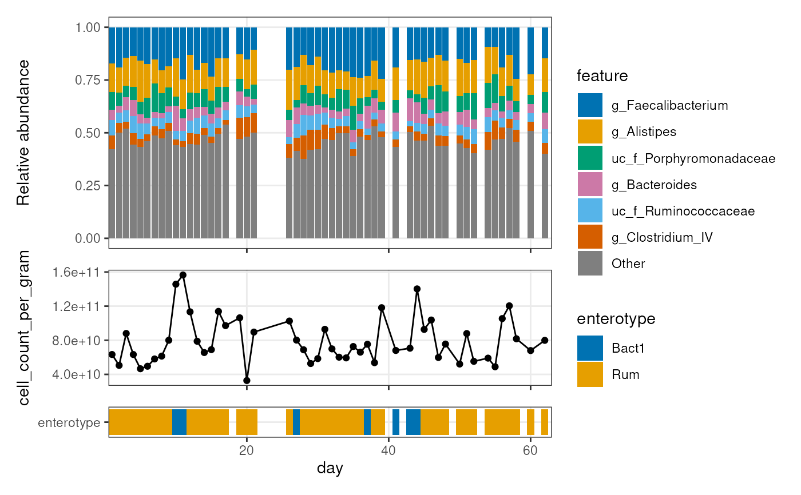

Plot the timeline of one subject
Source:R/AllGenerics.R, R/plotTimeline.R, R/zzz-mae.R
plotTimeline.RdplotTimeline() stacks tracks of one subject on a shared time
axis: the composition of the most abundant features, numeric variables
as lines, a strip of states and a strip of events.
plotTimeline(x, ...)
# S4 method for class 'SummarizedExperiment'
plotTimeline(
x,
time.col,
group = NULL,
subject = NULL,
assay.type = "counts",
y = NULL,
state.col = NULL,
events = NULL,
max.gap = NULL,
...
)
# S4 method for class 'MultiAssayExperiment'
plotTimeline(x, ..., experiment = 1L)Arguments
- x
a
SummarizedExperimentobject.- ...
additional arguments passed to
plotComposition, such asfeatures,top,as.relativeorlayout.- time.col
Character scalar. Specifies the column fromcolData(x)that contains sampling times: numeric,Date,POSIXctor a factor of visits. Time differences, as inmax.gap, are in days forDateand hours forPOSIXcttimes.- group
Character scalar. Specifies the column fromcolData(x)that identifies subjects. IfNULL, all samples belong to one subject. (Default:NULL)- subject
Character scalar. The subject to draw, a value of thegroupcolumn. (Default:NULL)- assay.type
Character scalar. Specifies the assay of abundances, also read forythat are features. (Default:"counts")- y
Character vector. Specifies the variables drawn as lines, one track each, as inplotTrend: columns ofcolData(x), rows ofassay(x, assay.type)or"<dimred>:<component>". (Default:NULL)- state.col
Character scalar. Specifies the column fromcolData(x)that contains the state of each sample, such as a community type, drawn as a strip of tiles. (Default:NULL)- events
data.frame. Events to draw in a strip at the bottom, one per row, with columnsstart, and optionallyend,labeland thegroupcolumn.startandendhave the type oftime.col; for visits, they are visit levels. Events with anendare drawn as bands, the others as vertical lines;labelsets their fill or line type. Events with agroupcolumn are drawn for their subject only. (Default:NULL)- max.gap
Numeric scalar. Breaks lines, and areas of the composition, where consecutive samples are further apart than this, intime.colunits. For visits,NULLbreaks them at visits without a sample; otherwiseNULLnever breaks them. (Default:NULL)- experiment
Character scalarorinteger scalar. For aMultiAssayExperiment, the experiment to plot; its samples get thecolDataofx. (Default:1L)
Value
A patchwork object, not a single ggplot: the tracks from
top to bottom.
Details
The tracks share the x axis: the same limits, from half the spacing of samples before the first to half after the last, widened to include the events, and the same breaks. Only the bottom track shows the time axis, and the legends of all tracks are collected on the right. The layout follows the subject timelines of Gajer et al. (2012), Figs 3 and 5, Zhou et al. (2019), Fig. 6b, and David et al. (2014), Fig. 1.
Draws with the patchwork package. A single track is changed with
p[[i]] <- p[[i]] + ..., all of them with p & ....
References
David LA, et al. (2014). Host lifestyle affects human microbiota on daily timescales. Genome Biology 15(7):R89. doi:10.1186/gb-2014-15-7-r89
Gajer P, et al. (2012). Temporal dynamics of the human vaginal microbiota. Science Translational Medicine 4(132):132ra52. doi:10.1126/scitranslmed.3003605
Zhou W, et al. (2019). Longitudinal multi-omics of host-microbe dynamics in prediabetes. Nature 569(7758):663-671. doi:10.1038/s41586-019-1236-x
Examples
# Daily samples of one woman over six weeks: genera, cell count per
# gram of stool and enterotype
data("temporalMicrobiome20", package = "miaTime")
tse <- temporalMicrobiome20
# Samples without a profile have the enterotype "NA"
tse <- tse[, tse$enterotype != "NA"]
plotTimeline(tse, time.col = "day", group = "person_id", subject = 820,
y = "cell_count_per_gram", state.col = "enterotype", top = 6)

# A bioreactor of a defined community: species, butyrate, the dominant
# species of each sample and the perturbations of its schedule
data("minimalgut", package = "miaTime")
tse <- mia::addDominant(minimalgut, name = "dominant")
events <- data.frame(
start = c(0, 152, 432),
end = c(24, NA, 436),
label = c("batch", "Blautia added", "double dilution rate"))
plotTimeline(tse, time.col = "Time.hr", group = "StudyIdentifier",
subject = "Bioreactor A", y = "Butyrate", state.col = "dominant",
events = events, top = 8, layout = "area")